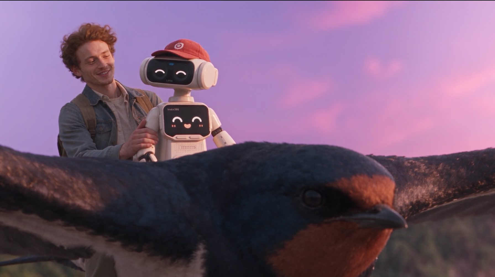
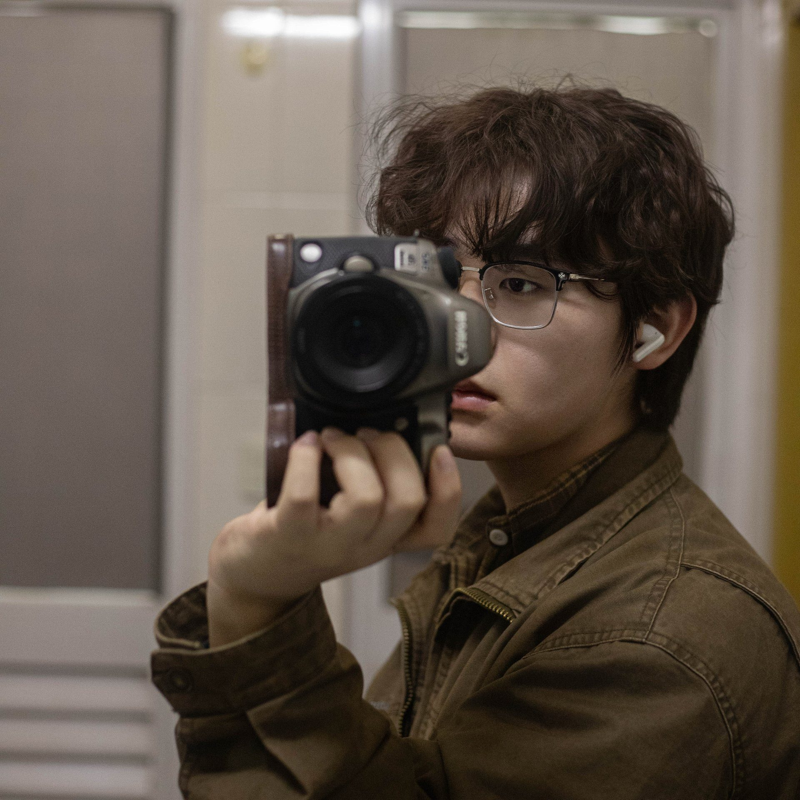
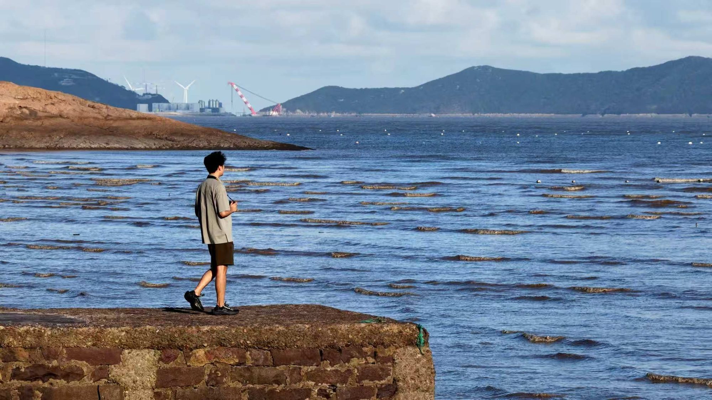
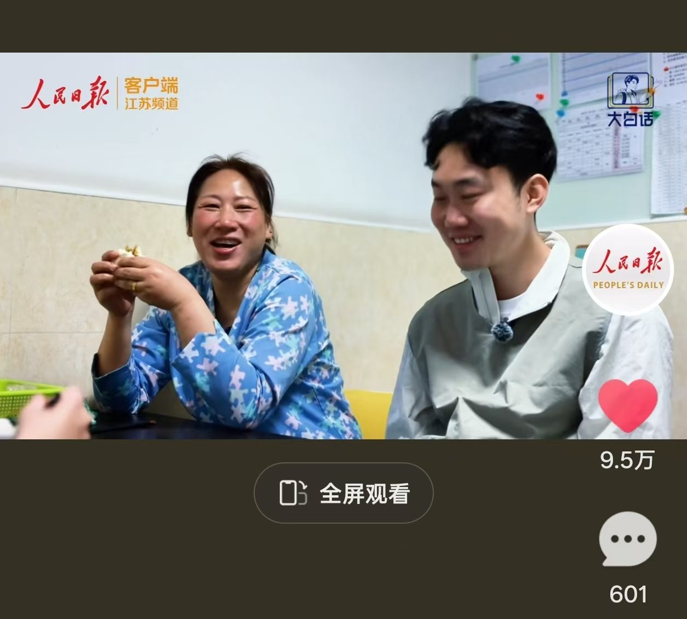
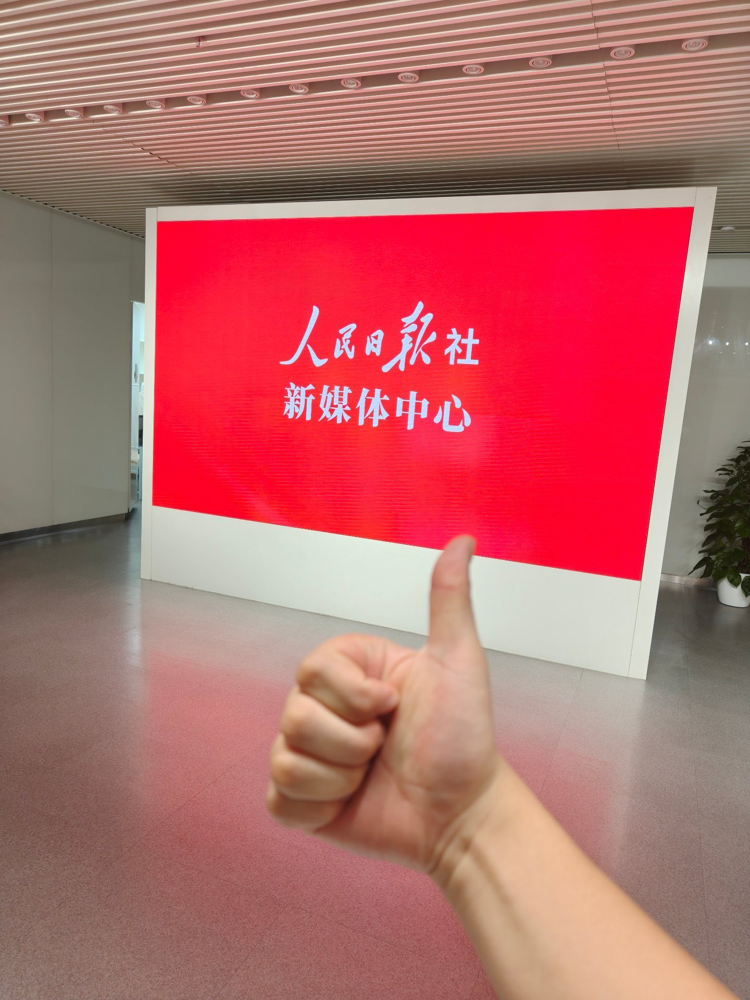
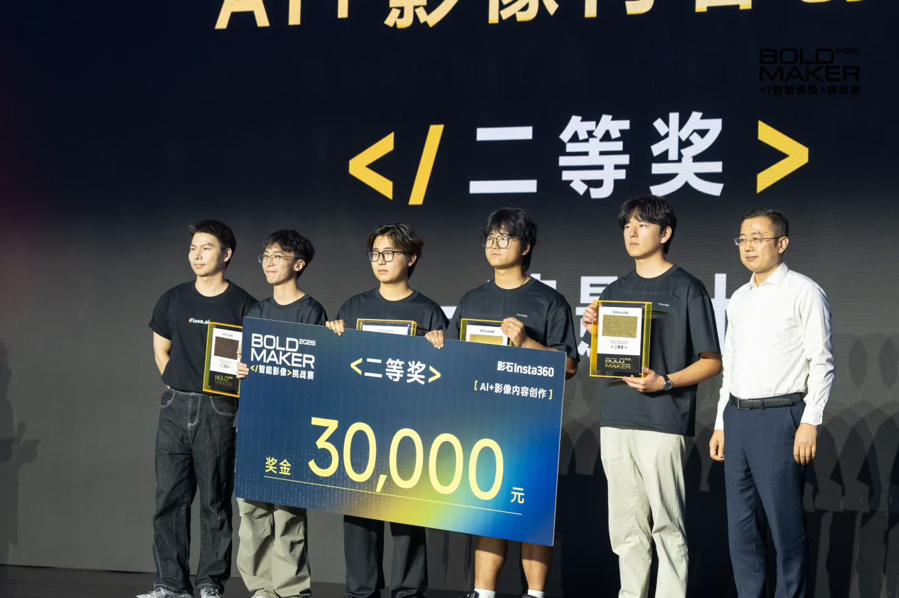
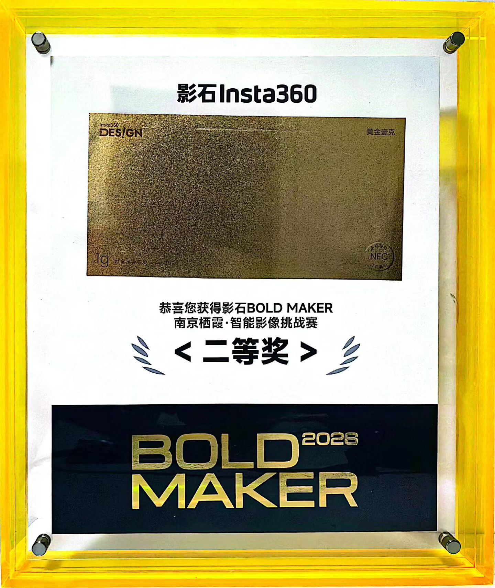
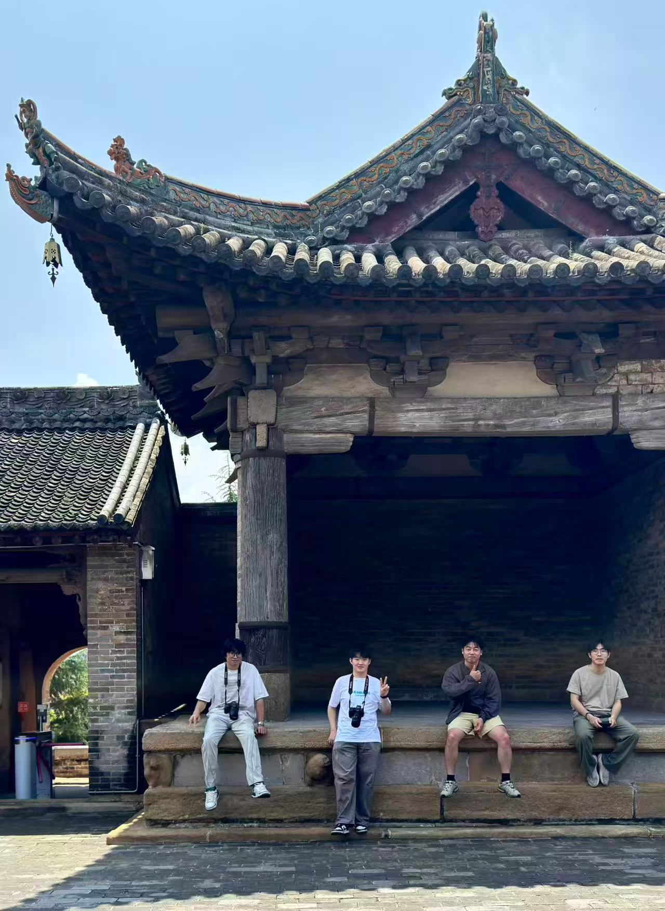

赛事短片 作品 · 壹 抖音播放 近 30 万 · 点赞近 1 万 · 影石挑战赛 二等奖《梦金山》
→

摄影给我们观看的耐心，技术让想象获得新的形状。我们关心的，始终是画面为何动人、一个故事如何被记住。
三部核心影像作品置顶，其后为静态摄影合集——按创作优先级排序，点击卡片进入作品详情。

赛事短片 作品 · 壹 抖音播放 近 30 万 · 点赞近 1 万 · 影石挑战赛 二等奖
纪实短片 作品 · 贰 快手播放 134.7 万 板块 · 肆
板块 · 肆
以看图为主的静态影像合集，收录课程作业与个人创作，呈现镜头之外的另一种观看节奏。
 板块 · 伍
板块 · 伍
换一个维度看这些画面：多帧融合与实景合成、三维空间重建。
参与「大白话」知识型网红栏目运营，栏目共 23 期，实习期间参与制作近一半（约 11 期）——涵盖现场纪实拍摄、无人机航拍、素材整理、粗剪与图片后期，配合团队完成成片输出与新媒体上线；表现最好的一期获 9.5 万点赞。团队综合栏目多期成果斩获「好记者讲好故事」第一名，《用“海”来打开宁波》正是其中的代表作品。
全程独立完成扬子江药业健康主题 AI 商业短片（约 2 分钟），覆盖前期策划、脚本、视觉制作、AI 画面生成、剪辑调色与音频配乐，成片于 2026 年 10 月 10 日上线人民日报文创客户端与人民日报文创视频号。


2026 影石 Insta360「BOLD MAKER」南京栖霞·智能影像挑战赛，黑客松限时创作。以「白日梦」为主题，实拍与 AI 结合完成幻想叙事短片《梦金山》，获「AI + 影像内容创作」赛道二等奖（奖金 30,000 元），并在赛事现场获影石创始人 JK 关注提及。


参与教育部立项的「中国古戏台演艺虚拟仿真创新实验室」项目——国内古戏台数字化领域首个官方研究平台，获国家艺术基金支持。使用徕卡（Leica）毫米级三维激光扫描仪，依托与海克斯康（Hexagon）共建实验室，对江浙皖古戏台开展数字化采集与三维重建。
全流程参与：前期田野调研 → 现场扫描（激光点云 + 无人机倾斜摄影 + 手持摄影测量）→ 点云处理与三维重建 → 后期制作与纹理映射，并承担项目多份文稿撰写。项目累计完成 107 座古戏台调研、12 座重点戏台高精度三维重建。
